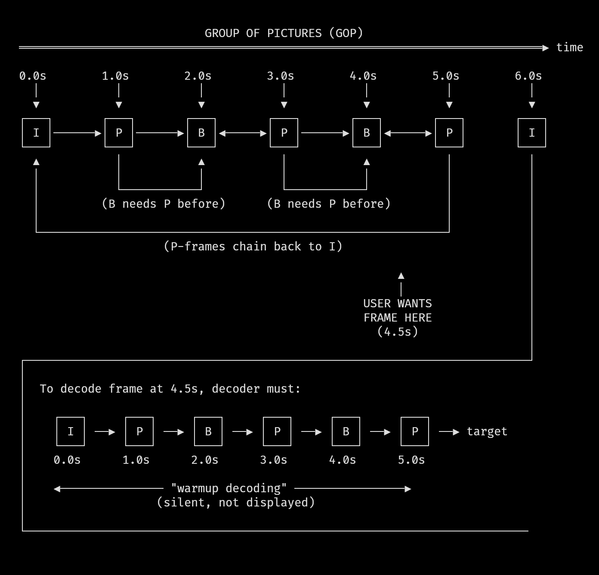

The first article covered real-time playback: keeping audio and video in sync with zero allocations in the hot path. That machinery works when the user just presses play and watches.
Then they press skip.
The moment a user hits the right arrow key to jump 5 seconds forward, nearly every assumption that made playback work is suddenly invalid. The frame queue is full of frames from the wrong time. The audio buffer is playing the wrong samples. The decoder's internal state references frames that no longer exist. And both clocks - video and audio - are pointing at a moment that's now in the past.
Pause is deceptively similar. "Just stop updating" seems obvious, but when you resume, the wall clock has advanced while your playback clocks haven't. Without careful bookkeeping, you get 10 seconds of desync for every 10 seconds paused.
This article covers:
Video Seeking - keyframes, codec flushing, and the warmup dance required to land on a valid frame
Pause Tracking - clock rebasing so resume doesn't cause drift
They're conceptually different problems, but both require understanding the same thing: playback clocks are not optional bookkeeping. They're the foundation that makes everything else work.
Keyframes Define Where You Can Land
Video codecs don't store complete frames at every timestamp - you can only decode from specific starting points.
When I first added seeking, my mental model was simple: tell FFmpeg "go to timestamp X" and start decoding from there. The reality is that video compression fundamentally breaks this assumption.
Modern video codecs use three types of frames:
I-frames (keyframes): Complete images, fully decodable on their own
P-frames: Predicted from previous frames - only store the differences
B-frames: Bidirectionally predicted from both past and future frames
A typical encoding might have keyframes every 2-5 seconds. Everything between them is deltas. If the user wants to see the frame at timestamp 10.0s but the nearest keyframe is at 8.0s, the decoder must:
Seek to the keyframe at 8.0s
Decode 8.0s (I-frame)
Decode 8.5s (P-frame, using 8.0s)
Decode 9.0s (B-frame, using 8.0s and 9.5s)
Continue until reaching 10.0s
The user pressed "skip 5 seconds" but the player may have just done 2+ seconds of silent decoding to get there.
Image: Diagram showing GOP structure with I, P, B frames and a seek target landing between keyframes Place image at: arender/output/movycat/when-simple-isnt-seeking-and-pausing/images/diagram-showing-gop-structure-with-i-p-b-frames-and-a-seek-target-landing-between-keyframes.png
'">
Diagram showing GOP structure with I, P, B frames and a seek target landing between keyframes
Backward Seeks Are Worse
When seeking backward, the nearest usable keyframe might be much further back than expected.
Forward seeks have a natural bound: you skip ahead, find the previous keyframe, decode forward to your target. The "hidden work" is at most one GOP (Group of Pictures) worth of frames.
Backward seeks break this assumption. If you're at 10.0s and want to go to 5.0s, the keyframe at 4.0s might work. But what if the encoder placed keyframes at 0.0s and 6.0s? Now you need to decode from 0.0s all the way to 5.0s - potentially hundreds of frames.
For backward seeks, we request a position 5 seconds earlier than our actual target. This increases the chance of landing on a usable keyframe. The warmup decoding that follows will advance to the real target.
Where FFmpeg Actually Lands
Seeking involves timestamp conversion, stream selection, and direction flags - all of which affect where you actually land.
The actual FFmpeg seek is handled in the movy library:
The timestamp conversion deserves attention. movycat works in nanoseconds internally, but FFmpeg uses stream-specific time bases. A video might have a time base of 1/30000 (for 29.97fps content) or 1/48000 (matching audio sample rate). The formula timestamp_ns * time_base.den / (time_base.num * 1_000_000_000) converts from nanoseconds to the stream's native units.
The AVSEEK_FLAG_BACKWARD flag tells FFmpeg to find the keyframe at or before the target timestamp. Without this flag, FFmpeg might seek to a keyframe after your target, which would miss the frame you wanted entirely for backward seeks.
Note that av_seek_frame seeks within a specific stream (the video stream, identified by stream_index). Audio and video streams can have different time bases, and seeking on one doesn't automatically position the other correctly. This is another reason we need the warmup phase - to let both streams find their footing.
Seek Invalidates Decoder State
Internal decoder buffers hold references to frames that no longer exist - they must be explicitly flushed.
FFmpeg's decoders maintain internal state. They cache reference frames, track prediction chains, and buffer packets for reordering. After a seek, all of this state references the old position. If you just start decoding from the new position, you get garbage.
avcodec_flush_buffers() tells the codec to drop its internal state. But that's not enough - there may still be frames sitting in output buffers. The drain loops call avcodec_receive_frame() repeatedly until they return EAGAIN or EOF, ensuring no stale frames leak into the new position.
After flushing, the first several frames you decode may have garbage or invalid timestamps. The codec needs time to rebuild its internal reference structures. This is where warmup decoding comes in.
Warmup Decoding
After a seek, decode frames silently until the codec stabilizes and produces valid timestamps.
Immediately after seeking and flushing, frames have unreliable presentation timestamps. The codec is rebuilding its state. movycat uses a multi-phase warmup to handle this:
// File: src/movy_player.zig:118-143// Phase 1: Decode 100 packets or until we see a valid video framevar warmup_attempts: usize = 0;
var found_video = false;
while (warmup_attempts < 100 and
!found_video) : (warmup_attempts += 1)
{
const result = decoder.processNextPacket(0, requested_pos, true);
if (result catchnull == .handled_video) {
found_video = true;
}
}
// Phase 2: Get accurate video timestamp (up to 150 more attempts)const actual_video_pts_ns =
try seekAndWarmupToFrame(decoder, requested_pos);
// Phase 3: Feed audio packets to warm up audio decodervar warm_audio_attempts: usize = 0;
while (warm_audio_attempts < 3000) : (warm_audio_attempts += 1) {
const r = decoder.processNextPacket(
0,
@intCast(actual_video_pts_ns),
false,
);
if (r catchnull == .handled_audio) break;
}
Phase 1 decodes up to 100 packets with sync bypassed (true parameter) just to get the video decoder producing output again. The bypass_sync parameter is critical here - it tells processNextPacket to queue frames regardless of their timestamps:
During normal playback, frames that are more than twice the sync window behind get filtered out at the queue level - they'd just be dropped later anyway. But after a seek, the clocks haven't been rebased yet, so every frame looks "late." Without bypass_sync, the warmup would queue nothing.
Phase 2 continues until we get a frame with a valid PTS (presentation timestamp):
This function tries up to 150 times to get a decodable frame with a valid timestamp. Each attempt sleeps 200 microseconds to avoid spinning. The returned pts_ns becomes the authoritative "where we actually landed" timestamp.
Phase 3 warms up the audio decoder by feeding it packets until one produces output. Audio codecs have their own internal state that needs rebuilding.
The specific limits (100, 150, 3000 packets) come from testing with various video files. Some heavily compressed videos need more warmup; these values handle everything I've thrown at movycat.
Clock Rebasing After Seek
After a seek, all playback clocks must be reset to the new position or sync will fail.
The A/V sync system from Part 1 compares frame timestamps against clock_start_ns - the wall-clock time when playback began. After a seek, frame timestamps jump to a completely different value, but clock_start_ns is still based on the original start. The comparison becomes meaningless.
This is the key insight: clock_start_ns should be set such that now - clock_start_ns equals the current playback position. If we're now at position 30.5s, and it's currently wall-clock time T, then clock_start_ns = T - 30.5s.
After this rebasing, the sync comparison frame_pts - (now - clock_start_ns) produces meaningful values again.
Part 1 described "one clock to rule them all" - the wall clock as the single source of truth. That's still true conceptually. But the implementation uses three start_time values (clock_start_ns, video.start_time_ns, audio.start_time_ns) because audio and video streams don't always start at the same timestamp. The first video frame might be at PTS 0, but the first audio sample might be at PTS 100ms. Each stream needs its own reference point to convert native timestamps to the common wall-clock timeline. The master clock_start_ns is the authority; the stream-specific values are offsets from it.
Audio needs its own rebasing, handled in a subsequent loop that waits up to 250ms for a valid audio frame:
The check for AV_NOPTS_VALUE is important. FFmpeg uses this sentinel value (-9223372036854775808, or INT64_MIN) to indicate "no timestamp available." Right after a seek, the codec is rebuilding its state and may produce frames without valid presentation timestamps. We keep trying until we get a frame with a real PTS, or until the 250ms deadline passes and we fall back to the video-based clock.
Discarding the Old Timeline
Queued frames and audio samples from the old position must be discarded - not just the decoder state.
Before the warmup dance even begins, we need to clear the output queues:
SDL_ClearQueuedAudio() drops all samples waiting in SDL's audio buffer. Without this, you'd hear a pop of old audio before the new position's audio arrives. Note that we call this function twice during the seek sequence - once here in the initial clearing, and again later before rebasing the audio clock. The second call ensures any audio samples that leaked through during warmup are also discarded.
This pops and frees every queued frame. The queue indices reset to zero.
The order matters: clear output buffers first, then flush decoder internals, then warm up. If you warm up before clearing, you're adding new frames to a queue still full of old ones.
The diagram below outlines the operations:
Overview diagram showing seek operation
Complete Seek Sequence
Here's the full skipTime() function with the logical flow visible:
// File: src/movy_player.zig:90-191pubfn skipTime(
self: *PlayerController,
decoder: *movy_video.VideoDecoder,
offset_ns: i64,
) !void {
if (self.isPaused()) return;
const current_pos: i64 =
@intCast(std.time.nanoTimestamp() - decoder.clock_start_ns);
const requested_pos = @max(current_pos + offset_ns, 0);
if (requested_pos >= decoder.video.fmt_ctx.duration * 1000) return;
// Boundary checks: can't seek before 0 or past the end.// The duration multiplication by 1000 converts from FFmpeg's// microsecond duration to nanoseconds.// 1. Perform the actual seekif (offset_ns < 0) {
const safe_seek_pos = @max(requested_pos - @as(i64, 5_000_000_000), 0);
try decoder.seekToTimestamp(safe_seek_pos, .backward);
} else {
try decoder.seekToTimestamp(requested_pos, .forward);
}
// 2. Clear all stale dataif (decoder.audio) |*audio| {
_ = SDL.SDL_ClearQueuedAudio(audio.audio_device);
}
decoder.video.resetQueue();
decoder.flushAndDrainCodecs();
// 3. Warmup phase 1: decode until video produces outputvar warmup_attempts: usize = 0;
var found_video = false;
while (warmup_attempts < 100 and !found_video) : (warmup_attempts += 1) {
const result = decoder.processNextPacket(0, requested_pos, true);
if (result catchnull == .handled_video) {
found_video = true;
}
}
// 4. Warmup phase 2: get accurate video timestampconst actual_video_pts_ns = try seekAndWarmupToFrame(decoder, requested_pos);
// 5. Warmup phase 3: warm up audio decodervar warm_audio_attempts: usize = 0;
while (warm_audio_attempts < 3000) : (warm_audio_attempts += 1) {
const r = decoder.processNextPacket(0, @intCast(actual_video_pts_ns), false);
if (r catchnull == .handled_audio) break;
}
// 6. Rebase video clocksconst now = std.time.nanoTimestamp();
const new_start_time = now - @as(i128, @intCast(actual_video_pts_ns));
decoder.clock_start_ns = new_start_time;
decoder.video.start_time_ns = new_start_time;
// 7. Rebase audio clocks (with 250ms timeout)// [audio rebasing code from earlier]// 8. Reset accumulated pause time
self.total_paused_ns = 0;
}
Timeline diagram showing seek operation: old frames discarded, codec flushed, warmup decoding, clock rebase
Eight distinct steps to handle what the user thinks of as "jump forward 5 seconds." This is why seeking behavior varies between video players - each one makes different tradeoffs in this sequence.
Why Pause Is Not Trivial
Pausing seems trivial until you realize wall-clock time keeps advancing while playback time doesn't.
With seeking understood, pause seems simpler. Just stop calling the decode loop, right?
The problem is the sync system. It compares frame PTS against now - clock_start_ns. During pause, now keeps incrementing. When you resume, the sync system sees frames that appear to be seconds (or minutes) behind the audio clock. It drops them. Audio plays; video is frozen.
Tracking Pause Duration
Record how long the pause lasted, then adjust all clocks by that amount on resume.
pause_start_ns captures the playback clock at the moment of pause. total_paused_ns accumulates pause durations across multiple pause/resume cycles.
When pause begins:
// File: src/movy_player.zig:42-48if (self.isPaused()) {
// Pause audio and measure pause time
self.pause_start_ns = decoder.getPlaybackClock();
if (decoder.audio) |*a| {
a.pauseAudioPlayback(true);
}
}
We record the current playback position and tell SDL to stop draining the audio buffer. pauseAudioPlayback(true) prevents audio samples from being consumed while we're paused:
The key calculation: pause_end_ns - self.pause_start_ns is the wall-clock time that elapsed during pause. We add this to every start_time_ns value - video, audio, and master clock.
After this adjustment, now - clock_start_ns returns the same playback position it would have if we'd never paused. The sync comparison works correctly.
The insight here is that clock_start_ns isn't "when playback started" but rather "the wall-clock time that corresponds to playback position 0." By sliding it forward during pauses, we maintain that correspondence.
Explicit Playback State
Explicit state tracking prevents impossible states and clarifies intent.
This might seem like overkill for three states, but it prevents a class of bugs. Without explicit state, you end up with boolean flags like is_paused and is_stopped that can get into inconsistent combinations.
When paused, we sleep 10ms and skip the entire decode/render cycle. No frame processing happens. No clock drift accumulates beyond what we've already tracked.
Edge Cases
Several edge cases required explicit handling:
Pause during seek: The skipTime() function returns early if paused:
After a seek, the clocks are rebased from scratch. Any previously accumulated pause time is baked into the new clock values, so we reset the accumulator.
Pause at end of video: Not explicitly handled - when the queue empties and EOF is reached, the player stops regardless of pause state:
Seeking and pausing forced the player to treat time as something that can be reset, not just advanced.
Frames, audio, decoder state, and playback clocks all have to be discarded and rebuilt when the timeline jumps. Once that rebasing is done, the synchronization model from Part 1 becomes valid again and playback can continue predictably.
With linear time restored - even after disruption - the next bottleneck is no longer when a frame should appear, but how it gets drawn.
In the next article, I’ll shift focus to the rendering side: how movy maps video frames onto a terminal using half-blocks, compositing, and input-driven redraws, and why terminal graphics turn out to be a system of their own.
Part 2 of "The Making of movycat" - a 4-part series about building a terminal video player in Zig.